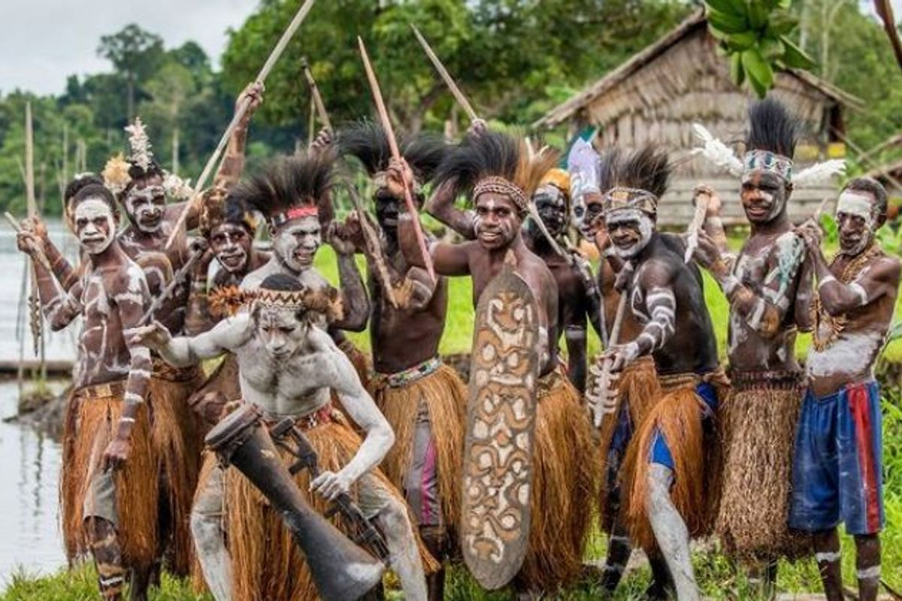

Kebudayaan Papua mencerminkan kekayaan tradisi dan keragaman etnis di wilayah paling timur Indonesia. Papua terdiri dari ratusan suku dengan bahasa, adat, dan kepercayaan yang berbeda-beda, seperti suku Dani, Asmat, dan Korowai. Setiap suku memiliki ciri khas masing-masing, seperti tarian tradisional, seni ukir, pakaian adat, dan cara hidup yang terikat erat dengan alam.
Seni ukir kayu, terutama dari suku Asmat, sangat terkenal di dunia, dengan motif-motif yang merepresentasikan roh leluhur dan cerita rakyat. Rumah adat suku Dani, yang disebut honai, juga mencerminkan cara hidup mereka yang unik. Tarian seperti tarian perang dan upacara adat menjadi bagian penting dari kehidupan sosial dan spiritual mereka.
Papua juga dikenal dengan festival budaya, seperti Festival Lembah Baliem, yang merayakan tradisi dan kehidupan suku-suku di sana. Meskipun banyak suku yang masih mempertahankan tradisi mereka, pengaruh modernisasi juga mulai merambah ke kehidupan sehari-hari di Papua.